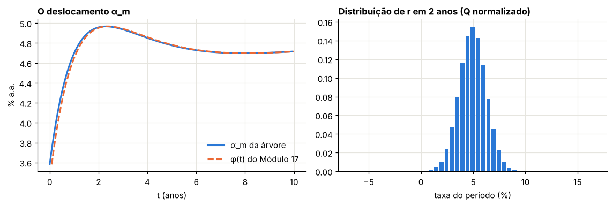
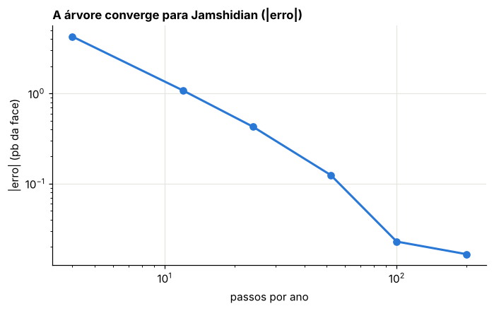
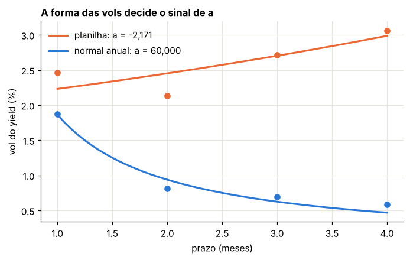
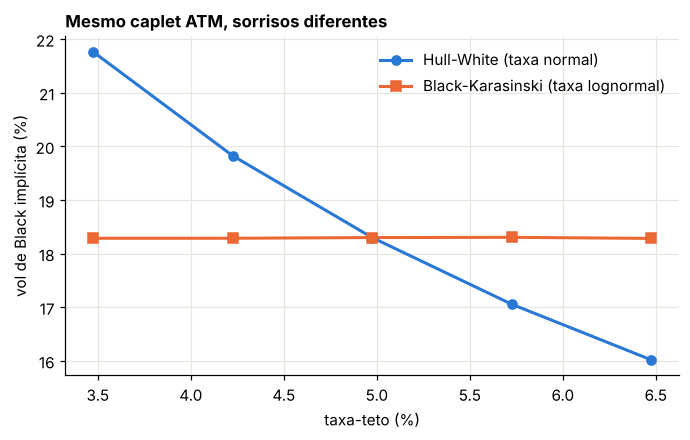

Módulo 18 — Hull-White II: a árvore trinomial#
Curso: Derivativos com Python. Módulo complementar, construído sobre Clewlow e Strickland, Implementing Derivatives Models, caps. 8 e 9; Hull e White (1993, 1994a, 1994b); e a planilha HW_arvore_final.
O que você vai conseguir fazer ao final#
Explicar o papel dos preços de Arrow-Debreu (“pure securities”) na indução para a frente.
Deduzir as probabilidades de uma árvore trinomial e o critério de troca de ramificação.
Construir a árvore de Hull-White pelos dois métodos clássicos: o de Clewlow-Strickland (§9.3), usado na planilha, e o de dois estágios de Hull-White (1994).
Reproduzir a aba “HW yield” da planilha e localizar um erro que nenhuma conferência de soma detecta.
Precificar na árvore opções europeias e americanas sobre títulos, títulos com opção de recompra e caps, e medir a convergência contra as fórmulas do Módulo 17.
Entender por que ajustar também a estrutura a termo das volatilidades (aba “HW yield and vol”) é delicado.
Trocar o Hull-White pelo Black-Karasinski na mesma árvore e ver o que muda.
Onde estamos#
O Módulo 17 deu fórmulas fechadas para títulos, opções europeias e caps. Elas não bastam para opções americanas, títulos com opções embutidas (callable, puttable) e payoffs dependentes do caminho. A árvore trinomial resolve esses casos e serve de laboratório para modelos sem fórmula fechada, como o Black-Karasinski. É o equivalente, para juros, da árvore CRR do Módulo 6.
0. Preparação#
As funções da curva sintética e as fórmulas fechadas do Módulo 17 são repetidas aqui, para servir de referência.
import time
import numpy as np
import pandas as pd
import matplotlib.pyplot as plt
from scipy.optimize import brentq
from scipy.stats import norm
from IPython.display import display
AZUL, LARANJA, VERDE, CINZA = "#2a78d6", "#eb6834", "#1baf7a", "#8a8a84"
RAMPA = ["#86b6ef", "#2a78d6", "#104281"]
plt.rcParams.update({
"figure.figsize": (7.2, 4.0), "figure.dpi": 110,
"axes.spines.top": False, "axes.spines.right": False,
"axes.grid": True, "grid.color": "#e6e5df", "grid.linewidth": 0.8,
"axes.axisbelow": True, "axes.titlesize": 11, "axes.titleweight": "bold",
"axes.titlelocation": "left", "lines.linewidth": 2.0, "legend.frameon": False,
"font.size": 10,
})
def f3(x):
"""Formata com três casas decimais no padrão brasileiro."""
return f"{x:,.3f}".replace(",", "§").replace(".", ",").replace("§", ".")
def tabela(df):
"""Exibe um DataFrame com os números reais em três casas decimais."""
def fmt(v):
if isinstance(v, (float, np.floating)):
return "n/d" if np.isnan(v) else f3(v)
return v
display(df.map(fmt))
_checks = {"n": 0}
def ok(condicao, mensagem):
"""Verificação do laboratório: interrompe o notebook se a conta não fechar."""
assert bool(condicao), f"FALHOU: {mensagem}"
_checks["n"] += 1
print(f"OK — {mensagem}")
# curva sintética Nelson-Siegel do Módulo 17
def P_merc(T, b0=0.045, b1=-0.010, b2=0.020, tau=1.5):
T = np.asarray(T, float); e = np.exp(-T / tau)
return np.exp(-(b0 * T + b1 * tau * (1 - e) + b2 * tau * (1 - (1 + T / tau) * e)))
A_HW, S_HW = 0.10, 0.010
def sigma_P(T, S, a=A_HW, s=S_HW):
return s / a * (1 - np.exp(-a * (S - T))) * np.sqrt((1 - np.exp(-2 * a * T)) / (2 * a))
def zbc(T, S, K, a=A_HW, s=S_HW):
"""Call europeia sobre zero-cupom (Jamshidian, Módulo 17)."""
PT, PS = P_merc(T), P_merc(S); sp = sigma_P(T, S, a, s)
h = np.log(PS / (K * PT)) / sp + sp / 2
return PS * norm.cdf(h) - K * PT * norm.cdf(h - sp)
def zbp(T, S, K, a=A_HW, s=S_HW):
PT, PS = P_merc(T), P_merc(S); sp = sigma_P(T, S, a, s)
h = np.log(PS / (K * PT)) / sp + sp / 2
return K * PT * norm.cdf(-h + sp) - PS * norm.cdf(-h)
print("Ambiente pronto.")
Ambiente pronto.
1. Preços de Arrow-Debreu#
Material: Ireland, Financial Economics, cap. 10; Clewlow e Strickland, §8.2
Um título de Arrow-Debreu (“pure security”) paga 1 se, e somente se, um estado específico ocorre numa data específica. Numa árvore, o estado é o nó \((i, j)\). Seu preço hoje, \(Q_{i,j}\), é tudo de que precisamos para avaliar qualquer fluxo que dependa só do nó: \(V_0 = \sum_jQ_{i,j}\,h_{i,j}\).
Duas propriedades fazem dos \(Q\) a ferramenta da calibração:
Somam ao zero-cupom. Um título que paga 1 em todos os estados da data \(i\) é o zero-cupom de prazo \(i\Delta t\): \(\sum_jQ_{i,j} = P(0, i\Delta t)\).
Se propagam para a frente. Para chegar ao nó \((i + 1, k)\), é preciso estar em algum \((i, j)\), descontar um período e ir de \(j\) para \(k\) com probabilidade \(q(j, k)\):
É a versão discreta da equação de Kolmogorov para a frente. A indução para a frente permite escolher o parâmetro de cada data (\(\theta_i\) ou \(\alpha_i\)) de modo que \(\sum_kQ_{i+1,k}\) seja exatamente o preço de mercado, uma data por vez.
2. A geometria de uma árvore trinomial#
Material: Clewlow e Strickland, §9.2
2.1 Espaçamento#
O tempo avança em passos \(\Delta t\). A taxa (ou a variável auxiliar \(x\)) fica numa grade fixa com espaçamento \(\Delta x\). A escolha padrão,
vem da analogia com diferenças finitas explícitas (Hull e White, 1993): ela dá a melhor relação entre estabilidade e precisão, e faz a probabilidade do ramo central valer \(2/3\) quando não há drift.
2.2 As probabilidades, passo a passo#
De um nó, o processo vai para três nós vizinhos, \(k + 1\), \(k\), \(k - 1\). Seja \(\eta\) a distância (em unidades de taxa) entre a média condicional e o nó central \(k\). Impomos três condições:
A segunda casa a média; a terceira, o segundo momento (\(\text{variância} + \text{média}^2\)). Resolvendo:
São as fórmulas da planilha (células “pu”, “pm”, “pd”).
2.3 Quando trocar de ramificação#
Com reversão à média, a média condicional de \(x\) a partir do nó \(j\) é \(j\Delta x(1 + M)\), com \(M = -a\Delta t\). Na ramificação normal (para \(j + 1\), \(j\), \(j - 1\)), \(\eta = jM\Delta x\), e com \(\Delta x^2 = 3\sigma^2\Delta t\) as probabilidades viram
\(p_m > 0\) exige \(|jM| < 0{,}816\). Longe do centro, a reversão empurra a média para baixo (ou para cima) mais que um \(\Delta x\), e \(p_d\) (ou \(p_u\)) ficaria negativa. A solução de Hull e White é trocar a ramificação: no topo, ir para \(j\), \(j - 1\), \(j - 2\); na base, para \(j + 2\), \(j + 1\), \(j\). As probabilidades nesses casos são válidas para \(0{,}184 < |jM| < 0{,}816\). Hull e White escolhem trocar no primeiro \(j\) com \(|jM| > 0{,}184\):
Isso dá à árvore uma largura máxima: ela para de crescer, o que também a deixa eficiente.
Laboratório 1 — As probabilidades em toda a grade#
def probabilidades(j, M, jmax):
"""Destino do nó central k e probabilidades (p_u, p_m, p_d) da árvore de Hull-White."""
jm = j * M
if j == jmax:
return j - 1, (7 / 6 + (jm**2 + 3 * jm) / 2, -1 / 3 - jm**2 - 2 * jm, 1 / 6 + (jm**2 + jm) / 2)
if j == -jmax:
return j + 1, (1 / 6 + (jm**2 - jm) / 2, -1 / 3 - jm**2 + 2 * jm, 7 / 6 + (jm**2 - 3 * jm) / 2)
return j, (1 / 6 + (jm**2 + jm) / 2, 2 / 3 - jm**2, 1 / 6 + (jm**2 - jm) / 2)
dt1 = 0.25
M1 = -A_HW * dt1
jmax1 = int(np.ceil(0.184 / (A_HW * dt1)))
dx1 = S_HW * np.sqrt(3 * dt1)
linhas = []
for j in range(-jmax1, jmax1 + 1):
k, (pu, pm, pdn) = probabilidades(j, M1, jmax1)
media = (pu * (k + 1) + pm * k + pdn * (k - 1)) * dx1
var = (pu * (k + 1) ** 2 + pm * k**2 + pdn * (k - 1) ** 2) * dx1**2 - media**2
linhas.append((j, k, pu, pm, pdn, media / dx1, j * (1 + M1), var / (S_HW**2 * dt1)))
tab1 = pd.DataFrame(linhas, columns=["j", "nó central k", "p_u", "p_m", "p_d", "média/Δx", "alvo j(1+M)", "variância/(σ²Δt)"])
print(f"Δt = {dt1}, a = {A_HW}: j_max = {jmax1}")
tabela(tab1)
ok((tab1[["p_u", "p_m", "p_d"]] > 0).all().all(), "todas as probabilidades são positivas, inclusive nas bordas")
ok(np.allclose(tab1["média/Δx"], tab1["alvo j(1+M)"]), "a média condicional é a do processo discretizado em todos os nós")
ok(np.allclose(tab1["variância/(σ²Δt)"], 1), "e a variância também")
Δt = 0.25, a = 0.1: j_max = 8
| j | nó central k | p_u | p_m | p_d | média/Δx | alvo j(1+M) | variância/(σ²Δt) | |
|---|---|---|---|---|---|---|---|---|
| 0 | -8 | -7 | 0,087 | 0,027 | 0,887 | -7,800 | -7,800 | 1,000 |
| 1 | -7 | -7 | 0,269 | 0,636 | 0,094 | -6,825 | -6,825 | 1,000 |
| 2 | -6 | -6 | 0,253 | 0,644 | 0,103 | -5,850 | -5,850 | 1,000 |
| 3 | -5 | -5 | 0,237 | 0,651 | 0,112 | -4,875 | -4,875 | 1,000 |
| 4 | -4 | -4 | 0,222 | 0,657 | 0,122 | -3,900 | -3,900 | 1,000 |
| 5 | -3 | -3 | 0,207 | 0,661 | 0,132 | -2,925 | -2,925 | 1,000 |
| 6 | -2 | -2 | 0,193 | 0,664 | 0,143 | -1,950 | -1,950 | 1,000 |
| 7 | -1 | -1 | 0,179 | 0,666 | 0,154 | -0,975 | -0,975 | 1,000 |
| 8 | 0 | 0 | 0,167 | 0,667 | 0,167 | 0,000 | 0,000 | 1,000 |
| 9 | 1 | 1 | 0,154 | 0,666 | 0,179 | 0,975 | 0,975 | 1,000 |
| 10 | 2 | 2 | 0,143 | 0,664 | 0,193 | 1,950 | 1,950 | 1,000 |
| 11 | 3 | 3 | 0,132 | 0,661 | 0,207 | 2,925 | 2,925 | 1,000 |
| 12 | 4 | 4 | 0,122 | 0,657 | 0,222 | 3,900 | 3,900 | 1,000 |
| 13 | 5 | 5 | 0,112 | 0,651 | 0,237 | 4,875 | 4,875 | 1,000 |
| 14 | 6 | 6 | 0,103 | 0,644 | 0,253 | 5,850 | 5,850 | 1,000 |
| 15 | 7 | 7 | 0,094 | 0,636 | 0,269 | 6,825 | 6,825 | 1,000 |
| 16 | 8 | 7 | 0,887 | 0,027 | 0,087 | 7,800 | 7,800 | 1,000 |
OK — todas as probabilidades são positivas, inclusive nas bordas
OK — a média condicional é a do processo discretizado em todos os nós
OK — e a variância também
3. O método de Clewlow e Strickland e a planilha#
Material: Clewlow e Strickland, §9.3; planilha, aba “HW yield”
3.1 A construção#
A taxa nos nós é \(r_{i,j} = r_{0,0} + j\Delta r\), com \(r_{0,0} = R(1)\), o yield do prazo \(\Delta t\). O drift no nó é \(\mu_{i,j} = (\theta_i - a\,r_{i,j})\,\Delta t\), e as probabilidades são as da Seção 2.2 com \(\eta = \mu_{i,j}\) (ramificação normal) ou \(\eta = \mu_{i,j} + (j - k)\Delta r\) (ramificação deslocada).
Como achar \(\theta_i\). Com a árvore construída até a data \(i\), escolhe-se \(\theta_i\) para acertar o título de prazo \((i + 2)\Delta t\):
Aproximando \(\mathbb{E}[e^{-r_{i+1}\Delta t}] \approx \exp(-\mathbb{E}[r_{i+1}]\Delta t + \tfrac12\sigma^2\Delta t^3)\), com \(\mathbb{E}[r_{i+1}] = r_{i,j} + (\theta_i - a\,r_{i,j})\Delta t\), e isolando \(\theta_i\):
É a fórmula das células B39 a D39 da planilha.
Laboratório 2 — Reproduzir a aba “HW yield”#
Entradas da planilha: data 03/01/2024; yields de 1 a 4 meses: 5,27%, 5,28%, 5,24% e 5,21%; \(\Delta t = 30/360\); \(\sigma = 0{,}024638\) e \(a = 0{,}0527\) (as mesmas células do Módulo 17).
R_pl = np.array([0.0527, 0.0528, 0.0524, 0.0521])
dt_pl, s_pl, a_pl = 30 / 360, 0.02463782739818595, 0.0527
dr_pl = s_pl * np.sqrt(3 * dt_pl)
P_pl = np.exp(-R_pl * np.arange(1, 5) * dt_pl)
def arvore_cs(R, dt, s, a, n_passos, deslocar_no_menos1=False):
"""Árvore de Clewlow-Strickland §9.3 com ramificação normal, como na planilha.
deslocar_no_menos1=True reproduz as fórmulas das células D75, D80 e D86 da planilha."""
dr = s * np.sqrt(3 * dt)
Q = {0: np.array([1.0])}
thetas, probs = [], {}
for i in range(n_passos):
js = np.arange(-i, i + 1)
r = R[0] + js * dr
soma = np.sum(Q[i] * np.exp(-2 * r * dt + a * r * dt**2))
th = (i + 2) * R[i + 1] / dt + s**2 * dt / 2 + np.log(soma) / dt**2
thetas.append(th)
mu = (th - a * r) * dt
pu = (s**2 * dt + mu**2) / (2 * dr**2) + mu / (2 * dr)
pm = 1 - (s**2 * dt + mu**2) / dr**2
pd_ = 1 - pu - pm
probs[i] = (pu, pm, pd_)
Qn = np.zeros(2 * i + 3)
for idx, j in enumerate(js):
c = j + i + 1 # posição de j na data i+1
if deslocar_no_menos1 and i == 1 and j == -1:
c += 1 # o erro: os ramos do nó (1,-1) sobem um nível
q = Q[i][idx] * np.exp(-r[idx] * dt)
Qn[c + 1] += q * pu[idx]; Qn[c] += q * pm[idx]; Qn[c - 1] += q * pd_[idx]
Q[i + 1] = Qn
return np.array(thetas), Q, probs
th_ok, Q_ok, pr_ok = arvore_cs(R_pl, dt_pl, s_pl, a_pl, 3)
th_pl, Q_pl, _ = arvore_cs(R_pl, dt_pl, s_pl, a_pl, 3, deslocar_no_menos1=True)
planilha_theta = [0.0052025826057877644, -0.012736624924031048, -0.04884807241485989]
planilha_Q1 = [0.15790312019740224, 0.6634773214221333, 0.1742375209805194] # j = -1, 0, 1
planilha_Q2 = [0.18333158340384287, 0.5758209294059917, 0.2116414931613954, 0.02044460069953802] # j = -1..2
tab2 = pd.DataFrame({"i": [0, 1, 2], "θ_i planilha (% a.a.)": 100 * np.array(planilha_theta),
"θ_i reproduzido, como na planilha (% a.a.)": 100 * th_pl,
"θ_i com a ramificação correta (% a.a.)": 100 * th_ok})
tabela(tab2)
tab2b = pd.DataFrame({"j": [-2, -1, 0, 1, 2], "Q_2,j planilha": [0.0] + planilha_Q2,
"Q_2,j correto": Q_ok[2]})
tabela(tab2b)
print("Σ Q_2 planilha:", f"{sum(planilha_Q2):.12f}", "| correto:", f"{Q_ok[2].sum():.12f}", "| P(0, 2Δt):", f"{P_pl[1]:.12f}")
print("Σ Q_3 correto:", f"{Q_ok[3].sum():.12f}", "| P(0, 3Δt):", f"{P_pl[2]:.12f}")
ok(np.allclose(th_pl, planilha_theta, rtol=1e-10), "os três θ_i da planilha são reproduzidos exatamente")
ok(np.allclose(Q_ok[1], planilha_Q1, rtol=1e-12), "os preços de Arrow-Debreu da data 1 conferem")
ok(np.allclose(Q_pl[2][1:], planilha_Q2, rtol=1e-12), "os da data 2 conferem com a versão deslocada")
ok(abs(Q_ok[2].sum() - P_pl[1]) < 1e-14 and abs(sum(planilha_Q2) - P_pl[1]) < 1e-14,
"as duas versões somam exatamente o zero-cupom de 2 meses: a conferência de soma não vê o erro")
ok(abs(th_pl[2] - th_ok[2]) > 0.04, "mas θ_2 muda mais de 4 pontos percentuais por ano")
ok(abs(Q_ok[3].sum() - P_pl[2]) < 1e-11, "com a ramificação correta, a aproximação de θ_i acerta também o título de 3 meses")
| i | θ_i planilha (% a.a.) | θ_i reproduzido, como na planilha (% a.a.) | θ_i com a ramificação correta (% a.a.) | |
|---|---|---|---|---|
| 0 | 0 | 0,520 | 0,520 | 0,520 |
| 1 | 1 | -1,274 | -1,274 | -1,274 |
| 2 | 2 | -4,885 | -4,885 | -0,196 |
| j | Q_2,j planilha | Q_2,j correto | |
|---|---|---|---|
| 0 | -2 | 0,000 | 0,035 |
| 1 | -1 | 0,183 | 0,252 |
| 2 | 0 | 0,576 | 0,492 |
| 3 | 1 | 0,212 | 0,193 |
| 4 | 2 | 0,020 | 0,020 |
Σ Q_2 planilha: 0.991238606671 | correto: 0.991238606671 | P(0, 2Δt): 0.991238606671
Σ Q_3 correto: 0.986985431542 | P(0, 3Δt): 0.986985431542
OK — os três θ_i da planilha são reproduzidos exatamente
OK — os preços de Arrow-Debreu da data 1 conferem
OK — os da data 2 conferem com a versão deslocada
OK — as duas versões somam exatamente o zero-cupom de 2 meses: a conferência de soma não vê o erro
OK — mas θ_2 muda mais de 4 pontos percentuais por ano
OK — com a ramificação correta, a aproximação de θ_i acerta também o título de 3 meses
O que aconteceu. Nas células D75, D80 e D86, os três ramos que saem do nó \((1, -1)\) são somados aos nós \((2, 1)\), \((2, 0)\) e \((2, -1)\), quando deveriam ir para \((2, 0)\), \((2, -1)\) e \((2, -2)\). A massa total não muda, e por isso \(\sum_jQ_{2,j}\) continua igual ao preço do zero-cupom: a conferência que a planilha faz (linha “sum(Q)”) passa. Mas a distribuição das taxas fica deslocada para cima, e \(\theta_2\), que depende de onde a massa está, sai \(-4{,}9\%\) em vez de \(-0{,}2\%\) ao ano.
Lição de validação: uma conferência que só olha totais não detecta erros de posição. Aqui, o teste que pega o erro é conferir a média e a variância condicionais em cada nó (Laboratório 1) ou reprecificar um instrumento que dependa da distribuição, como uma opção.
4. O método de dois estágios de Hull e White (1994)#
Material: Clewlow e Strickland, §9.5; Hull e White, 1994a
O método que se tornou padrão separa a forma da árvore do ajuste à curva.
Estágio 1 — a árvore de \(x\). \(x\) segue o OU sem drift de longo prazo, \(dx = -a\,x\,dt + \sigma\,dW\), com \(x_0 = 0\). A árvore de \(x\) é simétrica, com a geometria e as probabilidades da Seção 2, e não depende da curva.
Estágio 2 — o deslocamento. A taxa do período no nó \((m, j)\) é \(r_{m,j} = \alpha_m + j\Delta x\). Com os \(Q_{m,j}\) conhecidos, \(\alpha_m\) sai do zero-cupom de prazo \((m + 1)\Delta t\):
Sem aproximação: a árvore reproduz a curva exatamente em todas as datas da grade. O \(\alpha_m\) é a versão discreta do \(\varphi(t)\) do Módulo 17.
Laboratório 3 — A árvore de dois estágios#
class ArvoreTaxaCurta:
"""Árvore trinomial de Hull-White (1994). modelo='HW': r = α_m + x; modelo='BK': ln r = α_m + x."""
def __init__(self, a, s, dt, N, P, modelo="HW"):
self.a, self.s, self.dt, self.N, self.modelo = a, s, dt, N, modelo
self.dx = s * np.sqrt(3 * dt)
M = -a * dt
self.jmax = J = int(np.ceil(0.184 / (a * dt)))
self.js = np.arange(-J, J + 1)
self.k = np.zeros(2 * J + 1, dtype=int)
self.p = np.zeros((2 * J + 1, 3))
for idx, j in enumerate(self.js):
self.k[idx], self.p[idx] = probabilidades(j, M, J)
self.alpha = np.zeros(N)
self.Q = []
Q = np.zeros(2 * J + 1); Q[J] = 1.0
for m in range(N):
nm = min(m, J)
vivos = slice(J - nm, J + nm + 1)
x = self.js[vivos] * self.dx
alvo = P((m + 1) * dt)
if modelo == "HW":
self.alpha[m] = np.log(np.sum(Q[vivos] * np.exp(-x * dt)) / alvo) / dt
else: # BK: Newton-Raphson em α_m
al = np.log(-np.log(alvo) / ((m + 1) * dt)) if m == 0 else self.alpha[m - 1]
for _ in range(60):
rr = np.exp(al + x)
g = np.sum(Q[vivos] * np.exp(-rr * dt)) - alvo
al -= g / np.sum(-Q[vivos] * np.exp(-rr * dt) * rr * dt)
if abs(g) < 1e-15:
break
self.alpha[m] = al
self.Q.append(Q.copy())
d = Q * np.exp(-self.taxa(m) * dt)
Qn = np.zeros_like(Q)
for idx in range(J - nm, J + nm + 1):
c = self.k[idx] + J
Qn[c + 1] += d[idx] * self.p[idx, 0]; Qn[c] += d[idx] * self.p[idx, 1]; Qn[c - 1] += d[idx] * self.p[idx, 2]
Q = Qn
self.Q.append(Q)
def taxa(self, m):
x = self.alpha[m] + self.js * self.dx
return x if self.modelo == "HW" else np.exp(x)
def voltar(self, V, m):
"""Valor em m (todos os nós) de um vetor de valores V na data m+1."""
c = self.k + self.jmax
cont = self.p[:, 0] * V[c + 1] + self.p[:, 1] * V[c] + self.p[:, 2] * V[c - 1]
return np.exp(-self.taxa(m) * self.dt) * cont
def zero_cupom(self, m_ini, m_fim):
V = np.ones(2 * self.jmax + 1)
for m in range(m_fim - 1, m_ini - 1, -1):
V = self.voltar(V, m)
return V
dt3, N3 = 1 / 12, 120
t0 = time.time()
arv = ArvoreTaxaCurta(A_HW, S_HW, dt3, N3, P_merc)
print(f"10 anos, passo mensal: {N3} passos, j_max = {arv.jmax}, construída em {time.time() - t0:.2f} s")
datas = np.arange(1, N3 + 1) * dt3
erro_curva = np.array([abs(arv.Q[m].sum() - P_merc(m * dt3)) for m in range(1, N3 + 1)])
phi = lambda t: -np.log(P_merc(t + 1e-6) / P_merc(t - 1e-6)) / 2e-6 + S_HW**2 / (2 * A_HW**2) * (1 - np.exp(-A_HW * t)) ** 2
fig, axs = plt.subplots(1, 2, figsize=(10.5, 3.6))
axs[0].plot(np.arange(N3) * dt3, 100 * arv.alpha, color=AZUL, label="α_m da árvore")
axs[0].plot(datas, 100 * phi(datas - dt3 / 2), "--", color=LARANJA, label="φ(t) do Módulo 17")
axs[0].set_xlabel("t (anos)"); axs[0].set_ylabel("% a.a."); axs[0].set_title("O deslocamento α_m"); axs[0].legend()
mm = 24
axs[1].bar(arv.taxa(mm) * 100, arv.Q[mm] / arv.Q[mm].sum(), width=arv.dx * 80, color=RAMPA[1])
axs[1].set_xlabel("taxa do período (%)"); axs[1].set_title("Distribuição de r em 2 anos (Q normalizado)")
plt.tight_layout(); plt.show()
ok(erro_curva.max() < 1e-14, "a árvore reprecifica todos os 120 zero-cupons exatamente")
ok(np.abs(arv.alpha[1:] - phi(np.arange(1, N3) * dt3 + dt3 / 2)).max() < 5e-4, "α_m acompanha o φ(t) contínuo a menos de 5 pb")
ok(arv.jmax == int(np.ceil(0.184 / (A_HW * dt3))), "a largura máxima é a de Hull-White")
10 anos, passo mensal: 120 passos, j_max = 23, construída em 0.01 s

OK — a árvore reprecifica todos os 120 zero-cupons exatamente
OK — α_m acompanha o φ(t) contínuo a menos de 5 pb
OK — a largura máxima é a de Hull-White
5. Avaliar na árvore#
Material: Clewlow e Strickland, §9.9; Aula 3 (bond options, callable e puttable bonds)
Com a árvore pronta, avaliar é indução para trás: o valor num nó é o valor esperado nos três sucessores, descontado pela taxa do nó. Para exercício antecipado, compara-se o valor de continuação com o de exercício em cada data permitida.
5.1 Convergência para a fórmula fechada#
Call europeia com vencimento em 1 ano sobre o zero-cupom de 5 anos, strike no dinheiro a termo (como no Laboratório 4 do Módulo 17).
T5, S5 = 1.0, 5.0
K5 = P_merc(S5) / P_merc(T5)
ref5 = zbc(T5, S5, K5)
linhas = []
for por_ano in [4, 12, 24, 52, 100, 200]:
dt = 1 / por_ano
N = int(round(S5 / dt)); nT = int(round(T5 / dt))
t0 = time.time()
arv5 = ArvoreTaxaCurta(A_HW, S_HW, dt, N, P_merc)
PS = arv5.zero_cupom(nT, N)
payoff = np.maximum(PS - K5, 0)
V = payoff.copy()
for m in range(nT - 1, -1, -1):
V = arv5.voltar(V, m)
via_AD = np.sum(arv5.Q[nT] * payoff)
linhas.append((por_ano, arv5.jmax, 1e4 * V[arv5.jmax], 1e4 * via_AD, 1e4 * (V[arv5.jmax] - ref5), time.time() - t0))
tab5 = pd.DataFrame(linhas, columns=["passos por ano", "j_max", "árvore (pb)", "Σ Q·payoff (pb)", "erro (pb)", "tempo (s)"])
tabela(tab5)
print("Jamshidian:", f3(1e4 * ref5), "pb")
sel = tab5["passos por ano"] <= 100
incl = np.polyfit(np.log(tab5.loc[sel, "passos por ano"]), np.log(np.abs(tab5.loc[sel, "erro (pb)"])), 1)[0]
print("inclinação log-log do erro:", f3(incl))
fig, ax = plt.subplots()
ax.loglog(tab5["passos por ano"], np.abs(tab5["erro (pb)"]), "o-", color=AZUL)
ax.set_xlabel("passos por ano"); ax.set_ylabel("|erro| (pb da face)"); ax.set_title("A árvore converge para Jamshidian (|erro|)")
plt.show()
ok(np.allclose(tab5["árvore (pb)"], tab5["Σ Q·payoff (pb)"], rtol=1e-10), "indução para trás e soma dos preços de Arrow-Debreu dão o mesmo valor")
ok(abs(tab5["erro (pb)"].iloc[-1]) < 0.05, "com 200 passos por ano, o erro fica abaixo de 0,05 pb")
ok(incl < -0.9, "até 100 passos por ano, o erro cai pelo menos na proporção de 1/N")
ok(tab5["erro (pb)"].iloc[-1] * tab5["erro (pb)"].iloc[-2] < 0, "e perto de 200 passos muda de sinal: a convergência não é monótona")
| passos por ano | j_max | árvore (pb) | Σ Q·payoff (pb) | erro (pb) | tempo (s) | |
|---|---|---|---|---|---|---|
| 0 | 4 | 8 | 94,609 | 94,609 | -4,288 | 0,001 |
| 1 | 12 | 23 | 97,816 | 97,816 | -1,081 | 0,003 |
| 2 | 24 | 45 | 98,468 | 98,468 | -0,429 | 0,011 |
| 3 | 52 | 96 | 98,772 | 98,772 | -0,125 | 0,050 |
| 4 | 100 | 184 | 98,874 | 98,874 | -0,023 | 0,169 |
| 5 | 200 | 368 | 98,913 | 98,913 | 0,017 | 0,657 |
Jamshidian: 98,897 pb
inclinação log-log do erro: -1,579

OK — indução para trás e soma dos preços de Arrow-Debreu dão o mesmo valor
OK — com 200 passos por ano, o erro fica abaixo de 0,05 pb
OK — até 100 passos por ano, o erro cai pelo menos na proporção de 1/N
OK — e perto de 200 passos muda de sinal: a convergência não é monótona
O erro cai depressa (mais rápido que \(1/N\) no começo) e troca de sinal perto de 200 passos por ano: como na árvore CRR (Módulo 6), a convergência não é monótona, porque a posição do strike em relação aos nós muda com \(N\). Na prática, compara-se o resultado de duas ou três malhas, e não de uma só.
5.2 Opções americanas e títulos com opções embutidas#
Três produtos sobre a mesma árvore (passo semanal):
put americana sobre o zero-cupom de 5 anos, exercível até 1 ano, com strike igual ao preço à vista do título, \(P(0, 5)\) (um strike no dinheiro a termo ficaria acima do preço à vista, e o exercício imediato seria ótimo);
título com opção de recompra (callable): cupom anual de 5%, vencimento em 5 anos, o emissor pode resgatar ao par em cada data de cupom a partir do ano 2;
título com opção de venda (puttable): o mesmo, mas quem pode devolver ao par é o investidor.
Pela Aula 3: a opção de recompra é do emissor, por isso o callable vale menos que o título simples (o investidor vende a call); o puttable vale mais (o investidor compra a put).
dt6 = 1 / 52
N6 = int(round(5 / dt6))
arv6 = ArvoreTaxaCurta(A_HW, S_HW, dt6, N6, P_merc)
J6 = arv6.jmax
idx = lambda t: int(round(t / dt6))
# put americana sobre o zero-cupom
nT = idx(1.0)
PS = [None] * (N6 + 1)
V = np.ones(2 * J6 + 1)
for m in range(N6 - 1, -1, -1):
V = arv6.voltar(V, m)
PS[m] = V
K_am = P_merc(5.0) # strike igual ao preço à vista do título
put_eur = np.maximum(K_am - PS[nT], 0); put_am = put_eur.copy()
for m in range(nT - 1, -1, -1):
put_eur = arv6.voltar(put_eur, m)
put_am = np.maximum(arv6.voltar(put_am, m), K_am - PS[m])
premio_am = put_am[J6] - put_eur[J6]
print("put europeia:", f3(1e4 * put_eur[J6]), "pb | americana:", f3(1e4 * put_am[J6]), "pb | Jamshidian:", f3(1e4 * zbp(1.0, 5.0, K_am)), "pb")
# títulos com cupom
def titulo(opcao=None, cupom=0.05, datas_opcao=(2, 3, 4)):
datas_cupom = {idx(t): t for t in (1, 2, 3, 4, 5)}
V = np.full(2 * J6 + 1, 1.0 + cupom)
for m in range(N6 - 1, -1, -1):
V = arv6.voltar(V, m)
if m in datas_cupom and m > 0:
if opcao == "call" and datas_cupom[m] in datas_opcao:
V = np.minimum(V, 1.0) # o emissor resgata ao par (ex-cupom)
if opcao == "put" and datas_cupom[m] in datas_opcao:
V = np.maximum(V, 1.0) # o investidor devolve ao par
V = V + cupom
return V[J6]
simples = titulo()
fechado = sum(0.05 * P_merc(t) for t in (1, 2, 3, 4, 5)) + P_merc(5.0)
callable_, puttable = titulo("call"), titulo("put")
tab6 = pd.DataFrame({"título": ["simples (fórmula: Σ c·P + P)", "simples (árvore)", "callable", "puttable"],
"preço (% da face)": [100 * fechado, 100 * simples, 100 * callable_, 100 * puttable]})
tabela(tab6)
print("call do emissor:", f3(100 * (simples - callable_)), "% | put do investidor:", f3(100 * (puttable - simples)), "%")
ok(abs(simples - fechado) < 1e-12, "o título simples na árvore é exatamente o da curva")
ok(premio_am > 0 and abs(put_eur[J6] - zbp(1.0, 5.0, K_am)) < 2e-5, "a put europeia confere com Jamshidian e a americana vale mais")
ok(callable_ < simples < puttable, "callable < simples < puttable, como na Aula 3")
put europeia: 10,225 pb | americana: 46,305 pb | Jamshidian: 10,163 pb
| título | preço (% da face) | |
|---|---|---|
| 0 | simples (fórmula: Σ c·P + P) | 100,786 |
| 1 | simples (árvore) | 100,786 |
| 2 | callable | 99,385 |
| 3 | puttable | 102,080 |
call do emissor: 1,401 % | put do investidor: 1,294 %
OK — o título simples na árvore é exatamente o da curva
OK — a put europeia confere com Jamshidian e a americana vale mais
OK — callable < simples < puttable, como na Aula 3
5.3 Caps na árvore#
O caplet como put sobre zero-cupom (Módulo 17, Seção 5.1) é avaliado igual: na data de fixação, o payoff é \((1 + \delta R_K)\max\big(\frac{1}{1 + \delta R_K} - P(t_k, t_{k+1}), 0\big)\) em cada nó.
dt7, tk, delta = 1 / 48, 2.0, 0.25
N7 = int(round((tk + delta) / dt7)); nk = int(round(tk / dt7))
arv7 = ArvoreTaxaCurta(A_HW, S_HW, dt7, N7, P_merc)
PB7 = arv7.zero_cupom(nk, N7)
F7 = (P_merc(tk) / P_merc(tk + delta) - 1) / delta
def caplet_arvore(arv, PB, RK):
Kb = 1 / (1 + delta * RK)
V = (1 + delta * RK) * np.maximum(Kb - PB, 0)
for m in range(nk - 1, -1, -1):
V = arv.voltar(V, m)
return V[arv.jmax]
def caplet_black(RK, vol):
d1 = (np.log(F7 / RK) + 0.5 * vol**2 * tk) / (vol * np.sqrt(tk))
return delta * P_merc(tk + delta) * (F7 * norm.cdf(d1) - RK * norm.cdf(d1 - vol * np.sqrt(tk)))
taxas_teto = F7 + np.array([-0.015, -0.0075, 0.0, 0.0075, 0.015])
c_arv = np.array([caplet_arvore(arv7, PB7, k) for k in taxas_teto])
c_fec = np.array([(1 + delta * k) * zbp(tk, tk + delta, 1 / (1 + delta * k)) for k in taxas_teto])
tab7 = pd.DataFrame({"taxa-teto (%)": 100 * taxas_teto, "árvore (pb)": 1e4 * c_arv, "fórmula (pb)": 1e4 * c_fec})
tabela(tab7)
ok(np.abs(c_arv - c_fec).max() < 0.05e-4, "os caplets da árvore conferem com a fórmula a menos de 0,05 pb")
| taxa-teto (%) | árvore (pb) | fórmula (pb) | |
|---|---|---|---|
| 0 | 3,475 | 35,557 | 35,556 |
| 1 | 4,225 | 21,919 | 21,919 |
| 2 | 4,975 | 11,553 | 11,552 |
| 3 | 5,725 | 5,022 | 5,020 |
| 4 | 6,475 | 1,746 | 1,743 |
OK — os caplets da árvore conferem com a fórmula a menos de 0,05 pb
6. Ajustar também as volatilidades#
Material: Clewlow e Strickland, §9.8; planilha, aba “HW yield and vol”; Aula 5
6.1 A ideia#
Com \(a\) e \(\sigma\) constantes, o Hull-White ajusta a curva de juros, mas a estrutura a termo das volatilidades das taxas sai do modelo. Na data zero, a volatilidade normal do yield de prazo \(T\) é
que cai com o prazo quando \(a > 0\). Clewlow e Strickland (§9.8) permitem \(a\) e \(\theta\) dependentes do tempo, \(a_i\) e \(\theta_i\), escolhidos a cada passo para acertar o yield e a vol do yield de cada prazo. É o que faz a segunda aba da planilha.
6.2 O que a planilha obtém e por quê#
A aba encontra \(a_1 = -6{,}31\) e \(a_2 = -1{,}60\): reversão negativa, ou seja, taxas que se afastam da média. A razão está na fórmula acima: para \(\sigma_R(T)\) crescer com o prazo, é preciso \(a < 0\). E as vols que entram na aba crescem com o prazo (de 2,1% a 3,1%, de 2 a 4 meses) por causa da anualização vista no Módulo 17 (Seção 6.2). Com as vols medidas em unidades de taxa e \(\sqrt{252}\), a estrutura cai com o prazo, e o sinal de \(a\) se inverte.
Laboratório 4 — O sinal de \(a\) depende da conta da volatilidade#
Ajustamos \(\sigma\,(1 - e^{-aT})/(aT)\), com \(a\) e \(\sigma\) constantes, às duas estruturas de vols do Módulo 17.
prazos = np.array([1, 2, 3, 4]) / 12
vols_planilha = np.array([0.02463782739818595, 0.021359591580382732, 0.02717743310261939, 0.03061581517918258])
vols_corretas = np.array([0.018739, 0.008153, 0.006940, 0.005888]) # Módulo 17, Laboratório 6
def sigma_R(T, a, s):
return s * np.where(abs(a) < 1e-9, 1.0, (1 - np.exp(-a * T)) / (a * T))
def ajusta(vols):
from scipy.optimize import least_squares
res = least_squares(lambda p: sigma_R(prazos, *p) - vols, x0=[0.1, vols[0]], bounds=([-60, 1e-5], [60, 1.0]))
return res.x
a_pl_fit, s_pl_fit = ajusta(vols_planilha)
a_ok_fit, s_ok_fit = ajusta(vols_corretas)
tab8 = pd.DataFrame({"estrutura de vols": ["planilha (×252, sem escala de prazo)", "normal anual (×√252)"],
"a ajustado": [a_pl_fit, a_ok_fit], "σ ajustado (%)": [100 * s_pl_fit, 100 * s_ok_fit],
"1/a (meses)": [12 / a_pl_fit, 12 / a_ok_fit]})
tabela(tab8)
fig, ax = plt.subplots()
Tf = np.linspace(1 / 12, 1 / 3, 50)
for v, (a_, s_), cor, nome in [(vols_planilha, (a_pl_fit, s_pl_fit), LARANJA, "planilha"), (vols_corretas, (a_ok_fit, s_ok_fit), AZUL, "normal anual")]:
ax.plot(12 * prazos, 100 * v, "o", color=cor)
ax.plot(12 * Tf, 100 * sigma_R(Tf, a_, s_), color=cor, label=f"{nome}: a = {f3(a_)}")
ax.set_xlabel("prazo (meses)"); ax.set_ylabel("vol do yield (%)"); ax.set_title("A forma das vols decide o sinal de a"); ax.legend()
plt.show()
ok(a_pl_fit < 0, "com as vols da planilha, o ajuste pede reversão negativa (como a aba encontra)")
ok(a_ok_fit > 0, "com as vols em unidades de taxa, a reversão é positiva")
| estrutura de vols | a ajustado | σ ajustado (%) | 1/a (meses) | |
|---|---|---|---|---|
| 0 | planilha (×252, sem escala de prazo) | -2,171 | 2,036 | -5,527 |
| 1 | normal anual (×√252) | 60,000 | 9,387 | 0,200 |

OK — com as vols da planilha, o ajuste pede reversão negativa (como a aba encontra)
OK — com as vols em unidades de taxa, a reversão é positiva
Mesmo com as vols corretas, o ajuste vai para o limite superior permitido de \(a\) (\(1/a\) de poucos dias): a vol de 1 mês é mais que o dobro da de 2 meses, e um modelo de um fator com reversão constante só reproduz isso esquecendo os choques quase de imediato. Em 2023, a vol do T-bill de 1 mês carrega movimentos próprios desse prazo, que um fator não descreve.
Cautela de Hull e White (1994). Ajustar \(a_i\) e \(\sigma_i\) dependentes do tempo à vol de hoje faz a estrutura de vols futura ser muito diferente da atual: o modelo fica não estacionário, e o preço de opções que começam no futuro (opções sobre caps, swaptions forward) fica distorcido. A recomendação prática é manter \(a\) e \(\sigma\) constantes (ou \(\sigma\) por trechos), calibrados a opções.
7. Black-Karasinski na mesma árvore#
Material: Black e Karasinski (1991); Itkin, Lipton e Muravey (2021); Silva (2010, UFRGS)
7.1 O modelo#
A taxa é lognormal: sempre positiva, com volatilidade proporcional ao nível. Não há fórmula fechada para títulos nem para opções, e por isso a árvore é o método natural. A construção é a mesma: árvore de \(x\) no estágio 1, e \(\ln r_{m,j} = \alpha_m + j\Delta x\) no estágio 2. A diferença é que \(\alpha_m\) não sai mais em forma fechada: resolvemos
por Newton-Raphson, partindo do \(\alpha_{m-1}\) (o método está na classe ArvoreTaxaCurta, com modelo="BK").
Itkin, Lipton e Muravey (2021) lembram o outro lado: num ambiente de juros muito baixos ou negativos, o BK não consegue representar taxas negativas, e o pequeno deslocamento necessário muda a dinâmica; eles propõem uma modificação do tipo Verhulst. A dissertação de Silva (UFRGS, 2010) calibra uma versão generalizada do BK a títulos de desconto brasileiros.
Laboratório 5 — HW e BK com o mesmo caplet no dinheiro#
Calibramos o \(\sigma\) do BK para que o caplet no dinheiro de 2 anos tenha o mesmo preço que no HW, e comparamos as vols de Black ao longo dos strikes e o piso das taxas.
def caplets_modelo(arv):
PB = arv.zero_cupom(nk, N7)
return np.array([caplet_arvore(arv, PB, k) for k in taxas_teto])
def vol_black(preco, k):
return brentq(lambda v: caplet_black(k, v) - preco, 1e-4, 3.0)
atm_hw = c_arv[2]
s_bk = brentq(lambda s: caplets_modelo(ArvoreTaxaCurta(A_HW, s, dt7, N7, P_merc, "BK"))[2] - atm_hw, 0.05, 0.6)
arv_bk = ArvoreTaxaCurta(A_HW, s_bk, dt7, N7, P_merc, "BK")
c_bk = caplets_modelo(arv_bk)
tab9 = pd.DataFrame({"taxa-teto (%)": 100 * taxas_teto,
"vol Black HW (%)": [100 * vol_black(c, k) for c, k in zip(c_arv, taxas_teto)],
"vol Black BK (%)": [100 * vol_black(c, k) for c, k in zip(c_bk, taxas_teto)]})
tabela(tab9)
print("σ do BK (lognormal):", f3(100 * s_bk), "% | erro de ajuste da curva no BK:", f"{abs(arv_bk.Q[N7].sum() - P_merc(N7 * dt7)):.1e}")
print("menor taxa nos nós da data 2 anos — HW:", f3(100 * arv7.taxa(nk).min()), "% | BK:", f3(100 * arv_bk.taxa(nk).min()), "%")
fig, ax = plt.subplots()
ax.plot(tab9["taxa-teto (%)"], tab9["vol Black HW (%)"], "o-", color=AZUL, label="Hull-White (taxa normal)")
ax.plot(tab9["taxa-teto (%)"], tab9["vol Black BK (%)"], "s-", color=LARANJA, label="Black-Karasinski (taxa lognormal)")
ax.set_xlabel("taxa-teto (%)"); ax.set_ylabel("vol de Black implícita (%)"); ax.set_title("Mesmo caplet ATM, sorrisos diferentes")
ax.legend(); plt.show()
ok(abs(arv_bk.Q[N7].sum() - P_merc(N7 * dt7)) < 1e-14, "o BK, com Newton em cada data, também reprecifica a curva exatamente")
ok(np.ptp(tab9["vol Black BK (%)"]) < 0.2 * np.ptp(tab9["vol Black HW (%)"]), "o BK produz vols de Black quase planas; o HW, um skew")
ok(arv_bk.taxa(nk).min() > 0 > arv7.taxa(nk).min(), "o BK não tem taxas negativas; o HW tem")
| taxa-teto (%) | vol Black HW (%) | vol Black BK (%) | |
|---|---|---|---|
| 0 | 3,475 | 21,765 | 18,287 |
| 1 | 4,225 | 19,827 | 18,287 |
| 2 | 4,975 | 18,300 | 18,300 |
| 3 | 5,725 | 17,057 | 18,304 |
| 4 | 6,475 | 16,020 | 18,284 |
σ do BK (lognormal): 20,242 % | erro de ajuste da curva no BK: 1.1e-16
menor taxa nos nós da data 2 anos — HW: -17,294 % | BK: 0,053 %

OK — o BK, com Newton em cada data, também reprecifica a curva exatamente
OK — o BK produz vols de Black quase planas; o HW, um skew
OK — o BK não tem taxas negativas; o HW tem
O que aprendemos. A escolha entre HW e BK é uma escolha sobre o sorriso de vol. O HW, normal, dá vols de Black decrescentes no strike e admite juros negativos; o BK, lognormal, dá vols de Black quase planas e juros sempre positivos. Qual ajusta melhor depende do mercado e da época: com juros altos, o skew observado costuma ficar entre os dois.
8. Síntese#
Etapa |
O que fazer |
Laboratório |
|---|---|---|
Geometria |
\(\Delta x = \sigma\sqrt{3\Delta t}\), probabilidades por momentos, troca em \(j_{max} = \lceil 0{,}184/(a\Delta t)\rceil\) |
1 |
Ajuste à curva |
indução para a frente com Arrow-Debreu: \(\theta_i\) aproximado (C&S) ou \(\alpha_m\) exato (HW 1994) |
2 e 3 |
Conferência |
soma dos \(Q\) confere preços, não posições; conferir momentos nó a nó e reprecificar opções |
2 |
Avaliação |
indução para trás; exercício antecipado por comparação nó a nó |
5.1 a 5.3 |
Volatilidades |
ajustar vols com \(a_i\) variável é instável; a forma das vols decide o sinal de \(a\) |
4 |
Outro modelo |
BK na mesma árvore, \(\alpha_m\) por Newton |
5 |
9. Notas sobre a planilha HW_arvore_final#
Onde |
Observação |
|---|---|
“HW yield”, células D75, D80 e D86 |
os três ramos do nó \((1, -1)\) são somados um nível acima; a soma dos \(Q\) não muda (a conferência “sum(Q)” passa), mas \(\theta_2\) sai \(-4{,}88\%\) em vez de \(-0{,}20\%\) ao ano |
“HW yield” |
ramificação normal em todos os nós; adequado para poucos passos, mas para árvores longas é preciso a troca de ramificação da Seção 2.3 |
“HW yield and vol” |
as vols de entrada crescem com o prazo por causa da anualização (Módulo 17), o que leva a reversão negativa (\(a_1 = -6{,}31\); \(a_2 = -1{,}60\)) |
Ambas |
\(a\) igual à taxa de 1 mês (Módulo 17) |
10. Exercícios#
Exercício 1. Mostre que, com \(j = 0\) e \(\Delta x = \sigma\sqrt{3\Delta t}\), as probabilidades são \((1/6, 2/3, 1/6)\), e que a curtose da distribuição de um passo é 3, como a da normal.
Solução
Com \(\eta = 0\): \(p_u = p_d = \sigma^2\Delta t/(2\Delta x^2) = 1/6\), \(p_m = 2/3\). O quarto momento é \(2 \cdot \frac16\Delta x^4 = \frac13\Delta x^4 = 3\sigma^4\Delta t^2\), e o quadrado da variância é \(\sigma^4\Delta t^2\): curtose 3. É por isso que \(\sqrt3\) é a escolha natural.
Exercício 2. Construa a árvore de dois estágios com os dados da planilha (yields de 1 a 4 meses, \(\Delta t = 1/12\)). Compare os \(\alpha_m\) com os \(r_{0,0}\) e \(\theta_i\) da Seção 3.
Solução
Use ArvoreTaxaCurta(a, s, 1/12, 4, P), com P interpolando \(e^{-R(i)\,i\Delta t}\) nas datas da grade. O \(\alpha_0\) é exatamente \(R(1)\). Os demais diferem dos de C&S porque lá a árvore é centrada em \(r_{0,0}\) e o drift vai para as probabilidades; aqui o drift vai para o deslocamento \(\alpha_m\).
Exercício 3. Calcule o delta do título com opção de recompra em relação a um deslocamento paralelo da curva (reconstrua a árvore com \(P(0, t)e^{-\epsilon t}\)) e compare com o do título simples. Por que o callable tem duração menor?
Solução
Quando os juros caem, o título simples sobe sem limite, mas o callable fica preso perto do par, porque o emissor resgata. A sensibilidade a juros (duração efetiva) do callable é menor, e pode ficar muito pequena quando o título está perto do preço de recompra: é a convexidade negativa.
Exercício 4. No Laboratório 5, encontre um \(\sigma\) do HW e um do BK que reproduzam ao mesmo tempo os caplets de 2 anos com taxa-teto 1,5 ponto abaixo e 1,5 ponto acima do dinheiro. É possível? O que isso sugere?
Solução
Com um único parâmetro de vol, cada modelo tem uma inclinação de sorriso fixa: não dá para acertar dois strikes com inclinação diferente da do modelo. Isso motiva modelos com parâmetro de forma, como o CEV na taxa curta (\(dr = \dots + \sigma r^\beta dW\), §9.4 de Clewlow e Strickland), em que \(\beta\) interpola entre o normal (\(\beta = 0\)) e o lognormal (\(\beta = 1\)).
print(f"Módulo 18 concluído: {_checks['n']} verificações aprovadas.")
Módulo 18 concluído: 25 verificações aprovadas.